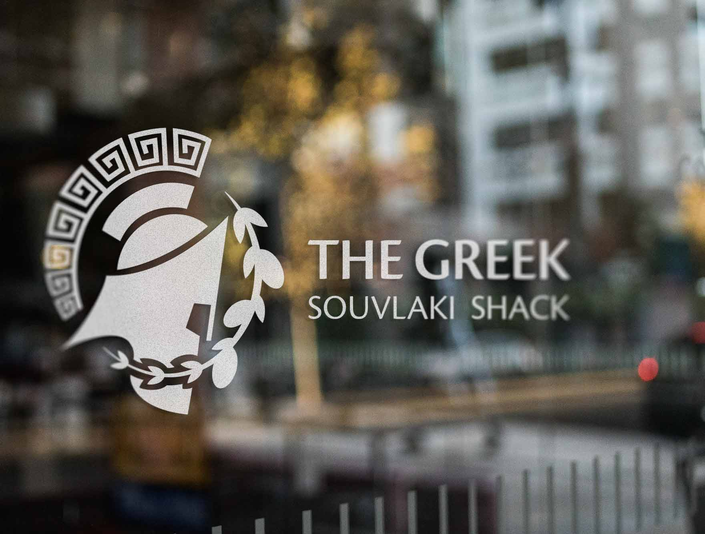
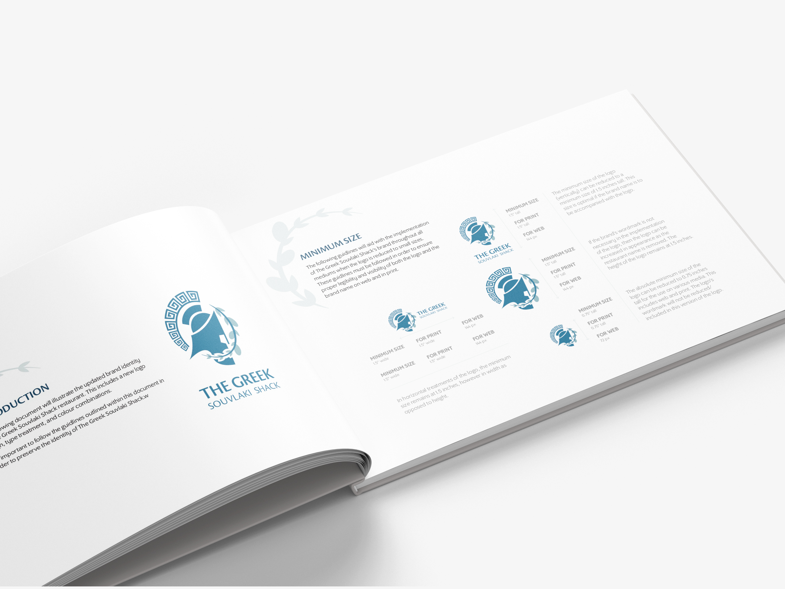

Logo design & Brand identity
A brand concept
Logo & branding


The Overview
Here's what we're working with
The Greek Souvlaki Shack is a concept of a small family-run Greek restaurant located in the downtown core of a major city. The restaurant would specialize in Mediterranean cuisine, and also offers imported Greek drinks and seafood options. The restaurant itself would have an intimate setting, giving off a modern café feel when first walking in; differentiating it from all other Greek restaurants.
The Mission
The objective of this creative is to bring the essence of the Greek Souvlaki Shack to life through a fresh logo; one that would reflect the brand’s identity of deluxe quality greek food in a trendy location.
The Ideas from my Brain
Sketching sketches
The first initial direction for the logo was to keep the Acropolis pillars of the original logo; which describes the wordmark of the brand from the word “shack”. This goes hand-in-hand with how the brand is perceived from the surface.

I then started to explore a bolder approach from the restaurant's potential motto, which is 'Where the Greek Gods come to dine'. This is where more explorative elements are introduced to the design, such as a spartan helmet to signify a God, an olive branch to signify cuisine, and a Greek pattern to signify culture.

After endless back-and-forth discussions with myself over the direction of the artwork, I decided to go with the bolder approach. It was the stronger direction of the two options, and made more of an impact as a brand identifier.

The process
Colour palette

The brand’s logo colours consist of two shades of blue: a primary blue and an accent blue. The combination of both these colours together give the logo a unified and eye-catching look. The muted tones of blue are not overpowering the logo’s appearance, but actually compliment the artwork and its message.
Typography
The Cronos font is very reflective of the contemporary, yet traditional feel the brand projects. Used as the font for the brand's wordmark, it works in unification with the logo. Program OT is the perfect addition to the pairing for body copy. Both fonts paired together project the feel of a modern Greek brand.
The outcome
Here's what the finished product looks like
The final logo is more reflective of the brand. It's more apparent when compared with the setting of the actual restaurant in terms of atmosphere and decor.

